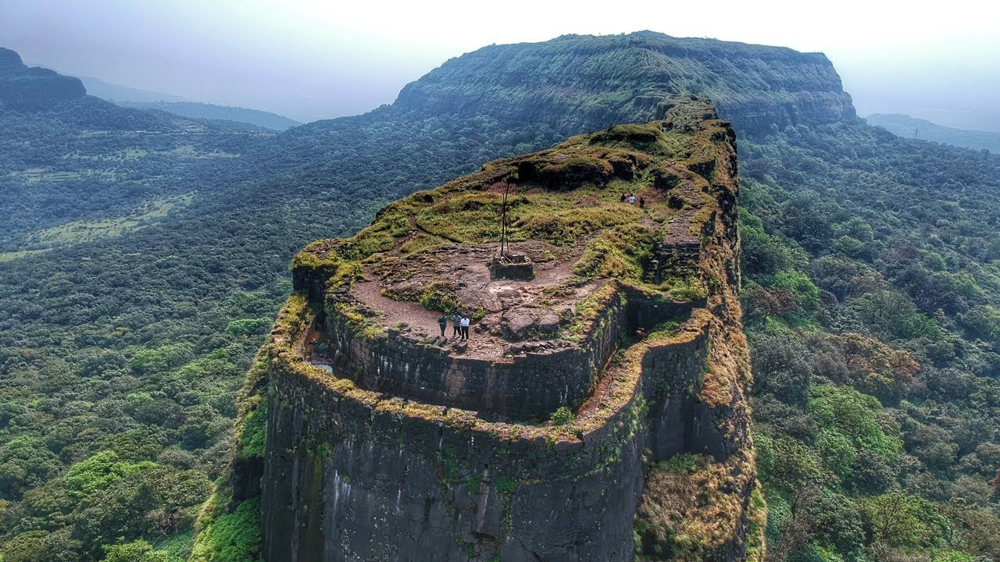

Location: Lonavla, Pune district of Maharashtra, India
Height: 3400 Ft
Mountain range: Sahyadri Mountain Range
Best Time to Visit: Monsoon and Winter
Difficulty Level: Easy
Base village for Lohagad: Lohagad Wadi
Lohagad Fort is situated atop an impressive hill near Malavali, 52 km away from Pune. This fort was built in the 18th century.
Lohagad, which is 3,400 feet high, is a very wide spread fort. Ganesh Darwaja, Narayan Darwaja, Hanuman Darwaja and Maha Darwaja are the four doors to Lohagad from the nearby village. A few sculptures are still visible on Maha Darwaja.
Vinchu Kata is the famous spot of Lohagad - which is a range of hills that looks like Capricorn. Pawana Dam can be viewed from the backside of Lohagad. Ideal time to visit is during the winter or the rainy season.
Nice one day trekking spot near Pune, Lonavala Region and perfect place for Begineers
Two and half hours drive from Mumbai 100 km approx.
Two hours drive from Pune - 65 km approx.
From Pune you have to take the Old Mumbai Pune Highway and head towards Lonavala. Just before reaching lonavala, you will find directions for Karla Caves.
Board any express Train going towards Pune, then alight at Lonavala Station then take a local train towards Pune and alight at Malavli Station from there either you can take a sharing auto to Lohgadwadi VIllage or else Walking.
Difficulty level is Easy but it depends on how experienced trekker you are.
There are plenty of small food stalls and restaurants at the base.
Yes you can drive using google maps - search for Bhaje Caves Parking area
Smoking and Drinking alcohol is strictly not allowed on the fort
Please refer below blog where we have listed all the necessary things to carry while going for a sahyadri mountain range trek.
{kind=link}
{kind=link}